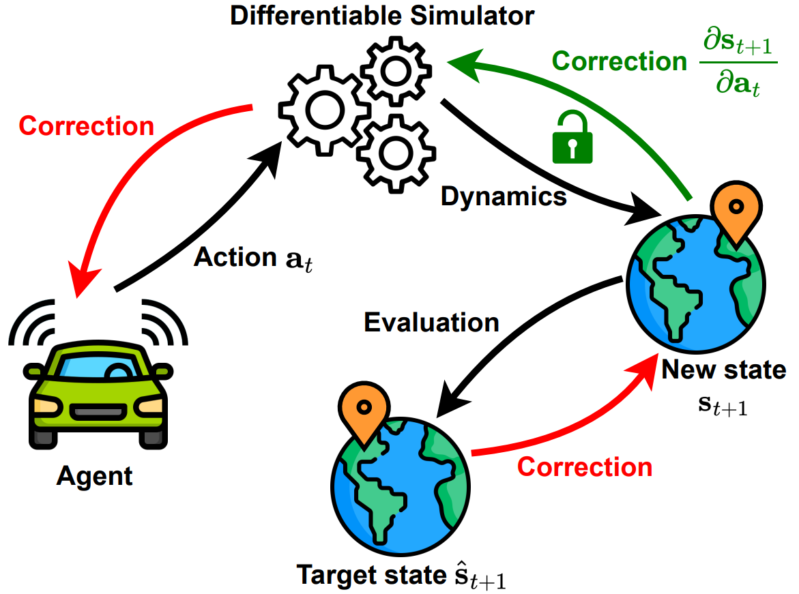
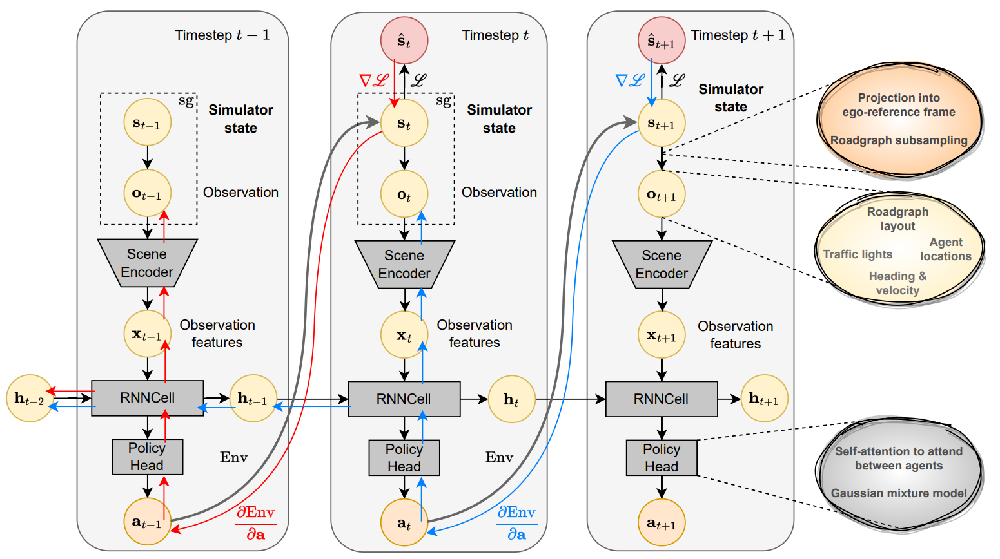
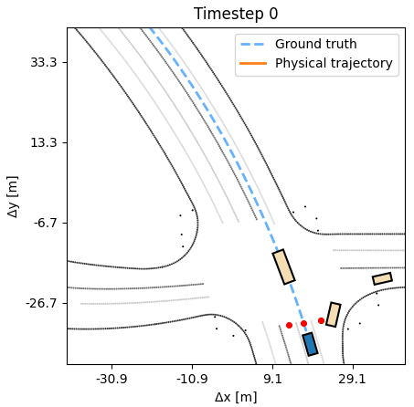
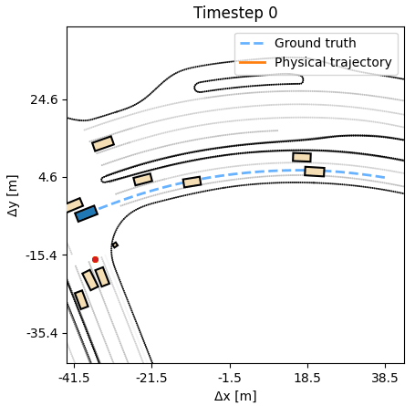

End-to-end control, planning, and search via differentiable physics

tl;dr
Differentiable simulation lets us backprop through the motion dynamics, so we train efficient, accurate, humanlike driving policies. The agent predicts an action, rolls it out in
a differentiable simulator, and is supervised to match the resulting state to expert's state — gradients flow through both the dynamics, which conditions the training.
Current methods to learn controllers for autonomous vehicles (AVs) focus on behavioural cloning. Being trained only on exact historic data, the resulting agents often generalize poorly to novel scenarios. Simulators provide the opportunity to go beyond offline datasets, but they are still treated as complicated black boxes, only used to update the global simulation state. As a result, these RL algorithms are slow, sample-inefficient, and prior-agnostic. In this work, we leverage a differentiable simulator and design an analytic policy gradients (APG) approach to training AV controllers on the large-scale Waymo Open Motion Dataset. Our proposed framework brings the differentiable simulator into an end-to-end training loop, where gradients of the environment dynamics serve as a useful prior to help the agent learn a more grounded policy. We combine this setup with a recurrent architecture that can efficiently propagate temporal information across long simulated trajectories. This APG method allows us to learn robust, accurate, and fast policies, while only requiring widely-available expert trajectories, instead of scarce expert actions. We compare to behavioural cloning and find significant improvements in performance and robustness to noise in the dynamics, as well as overall more intuitive human-like handling.

Our algorithm follows the style of Analytic Policy Gradients (APG).
We use the Waymax simulator.
Its state is a composite object containing tensors representing the current locations of the
traffic participants, the traffic lights, the roadgraph, and the route conditioning. Since most of these elements are continuous
and the dynamics are differentiable, they can be embedded
into an end-to-end training loop in which a policy is rolled-out and supervised.
Our APG driving agent has three modules: a scene encoder, to extract meaningful features from the currently observed scene,
a RNN module to fuse these features across time, and a policy head to choose the right action at every timestep.
These components are used autoregressively in order to generate long sequences of actions.
From the simulator state, we extract an observation containing
the necessary scene elements, which are encoded using the scene encoder.
The RNN, along with the policy head, predict an action
that is executed to obtain the new state. Next, we compare this new state to its
corresponding ground-truth state at that timestep (red circle). Gradients from the supervision flow back
through the dynamics and update the policy head, RNN, and the scene encoder. They also accummulate in the RNN hidden state accumulate. We do not backpropagate through the observation or
the simulator state.
The key property of the architecture is that by combining differentiable simulation with a recurrent policy,
the gradients of one dynamics step can mix with those of the policy predictions, and backpropagate through the RNN hidden state
into earlier steps. This results in efficient error assignment, with stable and fast training. The learned policy generalizes well to unseen scenes.
We evaluate our APG agent in the Waymax simulator over the Waymo Open Motion scenarios.
We compare against behavior cloning and RL methods, which
do not use the simulator's differentiability, in both single-agent and multi-agent settings, where the same trained policy controls all traffic participants.
Behavior cloning trains an agent by replaying the ground-truth trajectory and supervising the predicted actions with the expert ones. In contrast,
APG, based on DiffSim, allows the agent to experience the consequences of its actions, and supervises the resulting states.
Compared to behavior cloning, an APG agent moves confidently, producing
realistic humanlike trajectories.


As additional experiments, we assess how robust the learned APG policy is with respect to synthetic noise in the dynamics. We observe that the agent can tolerate a small amount of noise, up to 20cm at every timestep, without a deterioration in performance. A behavior cloning agent at similar noise levels performs considerably worse. Additional experiments, including training on half the length of each sequence, but evaluating on the full length, are available in the paper.
@inproceedings{nachkov2024autonomous,
title={Autonomous Vehicle Controllers From End-to-End Differentiable Simulation},
author={Nachkov, Asen and Paudel, Danda Pani and Van Gool, Luc},
booktitle={2025 IEEE/RSJ International Conference on Intelligent Robots and Systems (IROS)},
year={2025},
}